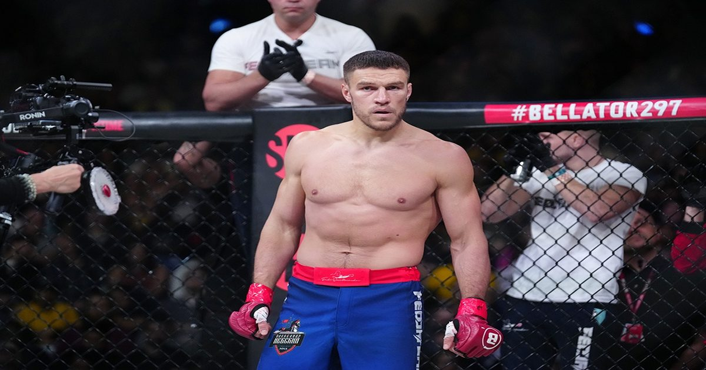

Уход за кожей спортсмена: уроки поражения Немкова
Поражение Вадима Немкова от Сергея Билостенного прервало десятилетнюю серию побед чемпиона PFL. Событие напоминает: даже у высокоподготовленных организмов ресурсы адаптации не безграничны, что напрямую отражается на состоянии кожи при системных нагрузках.
Физический стресс и барьерная функция кожи
Интенсивные тренировки и соревновательная деятельность создают уникальную нагрузку на кожные покровы. Пот, трение об снаряжение, контакт с матами и тактильные воздействия при борьбе нарушают гидролипидный мантус, снижая защитные свойства эпидермиса и повышая трансепидермальную потерю влаги.
Доказательная косметология рассматривает этот процесс как нарушение гомеостаза, требующее коррекции уходом, а не маскировки симптомов. Регулярное восстановление липидного барьера с помощью физиологичных составов — керамидов, холестерина, жирных кислот — помогает коже справляться с механическим стрессом без перехода в хроническое воспаление.
Важно отличать острую реакцию на тренировку от хронического барьерного дефицита, накапливающегося за сезоны. Инструментальная диагностика теваметрией или корнеометрией позволяет объективно оценить потерю влаги и толщину рогового слоя, выстраивая протокол ухода на данных, а не на субъективных ощущениях сухости.

Микротравмы и воспалительный ответ
Любой контактный вид спорта несет риск микротравм, ссадин и абразий, которые становятся воротами для инфекции и триггерами воспаления. Кожные покровы спортсменов часто демонстрируют признаки хронического подвоспалительного фона: повышенную чувствительность, склонность к посттравматической гиперпигментации и задержанную эпителизацию.
Подход к уходу в таких случаях строится на минимизации агрессии: отказ от механических скрабов, кислот высоких концентраций и спиртосодержащих тоников в периоды пиковых нагрузок. Приоритет — мягкое очищение, антисептики мягкого действия при необходимости и средства со пантенолом, мейдекассозидом или цинком для поддержки регенерации без риска рубцевания.
При выборе средств для заживления абразий предпочтение отдается гидроактивным повязкам и гелям на основе гиалуронат натрия или альгинатов, создающим влажную среду для миграции кератиноцитов. Сухое заживление с коркой увеличивает вероятность гипертрофических рубцов, что критично для лицевой зоны, контактирующей с перчатками и защитой.

Режим восстановления и системные факторы
График подготовки к титульному поединку предполагает экстремальные нагрузки, дефицит сна и колебания массы тела, что системно влияет на качество дермы. Кортизол, хронически повышенный при стрессе, подавляет синтез коллагена и гиалуроновой кислоты, ускоряя атрофические изменения и снижая тургор даже у молодых атлетов.
Нормализация сна, баланс макронутриентов и управление воспалительными маркерами через диету и отдых — база, без которой топические средства дают лишь временный эффект. Косметолог может рекомендовать антиоксидантную поддержку (витамин С, ниацинамид, ресвератрол) для нейтрализации окислительного стресса, но результат зависит от системного восстановления организма.
Периодизация ухода должна синхронизироваться с мезоциклами подготовки: в базовом периоде допустимы курсы ретиноидов или поверхностных пилингов для профилактики гиперкератоза, а в предсоревновательный — только поддержание барьера и фотозащита. Инвазивные процедуры планируются минимум за две недели до старта, исключая риск постинфляматорных изменений на фоне иммунодефицита пика формы.
Психоэмоциональный фон и кожевое состояние
Психоэмоциональное напряжение перед главным боем года запускает каскад нейромедиаторов, влияющих на иммунные клетки кожи. Выброс адреналина и кортизола вызывает сосудистые спазмы, ухудшает микроциркуляцию и снижает синтез структурных белков, что визуально проявляется тусклом тона, отечностью и снижением эластичности.
Техники релаксации, работа с дыханием и когнитивные стратегии справления со стрессом — не просто психологическая гигиена, а часть протокола дерматологического ухода. Снижение кортизольной нагрузки восстанавливает способность фибробластов к производству экстраклеточного матрикса, что на практике означает более быструю регенерацию после микротравм и устойчивость барьера к экзогенным факторам в день выхода на ковер.
Коротко: Поражение чемпиона иллюстрирует биологический предел адаптации: без системного восстановления барьер кожи рушится, а воспаление становится хроническим. Грамотный уход спортсмена — это не косметика, а часть спортивной медицины, синхронизированная с циклами нагрузок.
Как вы подбираете уход в периоды пиковых физических и эмоциональных нагрузок — меняете протокол или сохраняете привычную рутину?